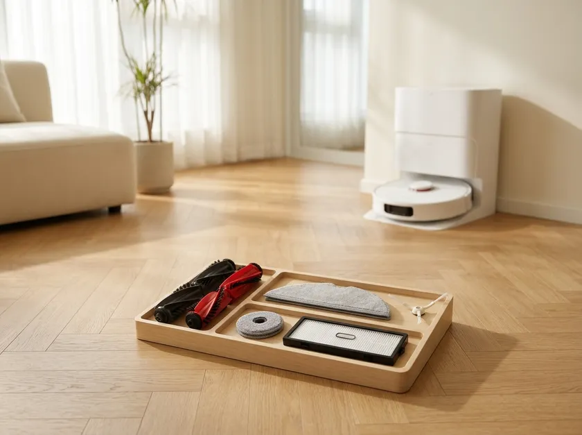

로보락 (Roborock)
로보락 S10 MaxV Ultra 필터·미니 걸레 규격 점검｜실패 없는 1년 세트 가이드
글·구성: 제이상점 · 기종별 1:1 호환 실물 점검 · 교체 주기 비교표 · 스마트스토어 패키지 안내

핵심 관리 · 선택 체크포인트
- 청소 예약은 매일 꼬박꼬박 돌아가는데 요즘 부쩍 로보락 S10 MaxV Ultra를 반년 이상 쓰면서 중앙 세로탭 필터에 미세먼지가 끼고 반원형 진동 걸레 패드가 얇아져 바닥 밀착감이 예전 같지 않은 현상 때문에 신경 쓰이셨나요?
- 냄새와 흡입력 차이를 만드는 S10 MaxV Ultra 교대 케어 포인트: 실사용 만족도를 가르는 핵심 부위는 단연 반원형 진동 메인 걸레 + 원형 엣지 미니 걸레 조합과 중앙 세로탭 직사각 필터입니다.
- S10 MaxV Ultra 냄새·흡입력 복원 부위별 점검 기준표: 번거로운 분해 수리 전에 아래 세 가지 핵심 구간만 순서대로 교대 점검해 주셔도 바닥 뽀송함과 집진 효율이 눈에 띄게 달라집니다.
- 여분 교대가 편해지는 S10 MaxV Ultra 기간별 옵션 선택 가이드: 시중 저가 세트 중에는 간혹 S10의 작은 ‘원형 엣지 미니 패드’나 곡선형 2발 브러시 규격이 누락된 경우가 있어 주의해야 합니다.
- 현재 대표 구성 기준가 70,100원대(옵션·할인 혜택에 따라 스토어 결제 화면 기준 상이)로 운영 중이니 우리 집 청소 주기와 남은 재고를 대조한 뒤 제이상점 로보락 S10 MaxV Ultra 스마트스토어 상세 옵션에서 가장 실속 있는 구성을 선택해 보세요.
실물 부품 디테일 · 관리 구성 이미지



부품 규격 · 점검 기준표
| 집중 관리 포인트 | S10 MaxV Ultra 적용 부품 규격 | 쾌적함 유지하는 실전 교대 루틴 |
|---|---|---|
| S10 vs S9 필터 1초 구분 | S10은 ‘직사각+중앙 세로탭’, S9은 ‘계단식 단차’ | 두 플래그십 모델의 필터·걸레 형상이 완전히 다르므로 S10 전용 확인 필수 |
| 미니 엣지 패드 동시 케어 | 우측 모서리 전용 소형 원형 패드 포함 여부 체크 | 큰 패드만 갈고 미니 패드를 방치하면 걸레받이 주변에 물자국 발생 |
| 세제 옵션 맞춤 설계 | 호환세제 / 정품세제 업그레이드 / 세제 미포함 | 도크 자동 세제통 잔량에 맞춰 필요한 옵션만 중복 없이 선택 |
💡 교체 주기가 겹치는 필터·브러시·물걸레·더스트백은 단품 배송비를 여러 번 내기보다 로보락 S10 MaxV Ultra 기간별 세트(3개월·6개월·1년)로 미리 구비해 두면 물세척 후 24시간 교대 건조까지 끊김 없이 관리할 수 있습니다.
자주 묻는 질문 (FAQ)
Q. 곡선형 2발 사이드브러시 가닥이 살짝 휘었을 때 관리 팁이 있나요?
A. 운송 중이거나 가구 밑 주행 후 나일론 모가 살짝 휘었다면 따뜻한 물에 잠깐 담갔다 펴서 말리면 탄성이 일부 회복되지만, 끝단이 닳아 짧아졌다면 모서리 집진력을 위해 새 브러시로 교체해 주세요.
Q. S10 MaxV Ultra 자동 세제통에는 세제를 희석해서 넣나요, 원액 그대로 넣나요?
A. 도크 내 자동 세제 카트리지에는 전용 클리너 원액을 그대로 보충하면 도크가 알아서 정량 희석합니다(정수통에 중복 투입 금지). 리필용 정품 단품은 로보락 정품 전용 클리너 세제 1L (1병·2병 단품 보충) 구성에서 언제든 보충하실 수 있습니다.
제이상점 1:1 검수 추천 패키지 · 구매 안내
메인 추천 구성
대표 구성 참고가 70,100원대 (옵션·쿠폰별 스마트스토어 결제 화면 기준)
1년세트1년세트｜호환세제→정품세제 업그레이드6개월세트6개월세트｜호환세제→정품세제 업그레이드3개월세트
![[정품] 로보락 세제 전용 세정제 세정액 클리너 소모품 S10 S9 S8](../../assets/img/roborock-cleaner-product-eec13fec.webp)
함께 많이 찾는 보충 구성
용량 1L-1병용량 1L-2병(복수구매할인)
☑️ 주문 전 확인해 두면 좋은 제이상점 안심 포인트
· 기종별 1:1 전용 규격 검수: 모델명·연식에 맞는 호환·정품 구성을 검수해 오주문 불안을 줄였습니다.
· 해외직배송 미리 주문 팁: 중국 구매대행·해외직배송 상품이므로 마지막 여분 1개를 꺼내 쓰는 시점에 개인통관고유부호와 함께 여유 있게 주문해 두시면 훨씬 경제적인 비용으로 끊김 없이 교체하실 수 있습니다.
· 기종별 1:1 전용 규격 검수: 모델명·연식에 맞는 호환·정품 구성을 검수해 오주문 불안을 줄였습니다.
· 해외직배송 미리 주문 팁: 중국 구매대행·해외직배송 상품이므로 마지막 여분 1개를 꺼내 쓰는 시점에 개인통관고유부호와 함께 여유 있게 주문해 두시면 훨씬 경제적인 비용으로 끊김 없이 교체하실 수 있습니다.
📖 더 많은 가정 내 사용 스토리와 상세 후기가 궁금하시다면
📱 네이버 블로그 모바일 원문 보기 ↗